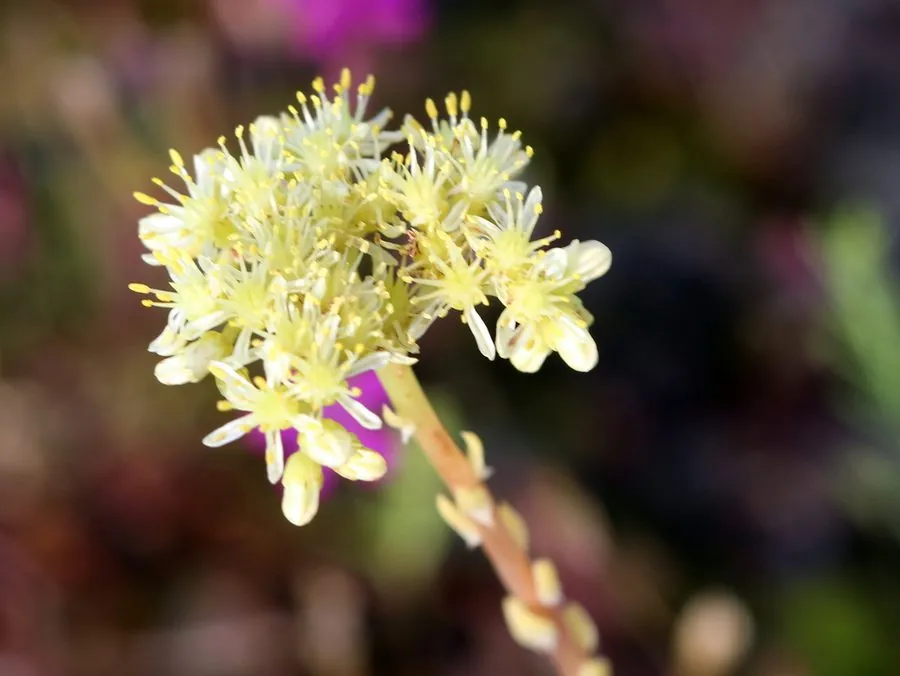

多肉植物 · 植物界
千佛手 Sedum sediforme

景天科景天属多年生肉质植物，叶片圆柱形、密集排列如千手舒展，生长迅速、容易群生，是新手入门的多肉品种。
- 分类
- 门被子植物门纲木兰纲目虎耳草目科景天科属景天属
- 栖息环境
- 原产地中海岩坡，栽培需光照充足、排水良好
- 地理分布
- 原产地中海地区；中国各地作为观赏多肉栽培
- 保护级别
- 暂无评估；栽培观赏植物，不涉及保护等级
物种志
千佛手为景天科景天属多年生肉质植物，茎直立或倾斜，高可达二十厘米，易从基部长出侧芽形成群生。叶片圆柱形至长卵形，肥厚多汁，先端尖，紧密排列在茎上，表面灰绿色，光照充足时叶尖泛红。花期春季，花茎从顶端抽出，花小，星形，黄色；蓇葖果，种子细小。
千佛手原产地中海地区，中国各地广泛栽培。它喜光、耐旱、耐寒性较好，春秋为生长旺季，夏季高温时适度遮阴；适宜疏松透气、排水良好的基质，忌积水和闷湿。植株容易群生、生长迅速，是新手入门和多肉拼盆的常用品种；也可作地被或岩石园材料。繁殖以枝插和分株为主，剪下的枝条晾干伤口后插土即可生根。
形态与习性
- 株型茎直立，易群生
- 叶片圆柱形，密集排列
- 花期春季，花小、黄色
- 光照喜光，夏季适度遮阴
- 水分耐旱，干透浇透
- 土壤疏松排水良好的基质
- 主要用途多肉盆栽、拼盆与地被
趣味知识
- 千佛手的叶片圆柱形、密集向上伸展，形似千手观音的手掌。
- 它容易从基部长出侧芽，两三年就能长成满满一盆群生株。
- 千佛手耐寒性较好，在长江流域冬季适当保护即可越冬。